Move or edit a louver
In the ordered environment, you can edit the louver parameters to change such things as the height or depth of the louver.
In the synchronous environment, you can move a louver along the face or edit the louver parameters to change such things as the height, length, or depth of the louver.
Edit louver parameters in the ordered environment
-
Select the louver.
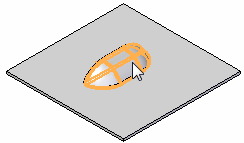
-
Select the Dynamic Edit button
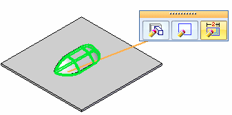
-
Click a dimension.
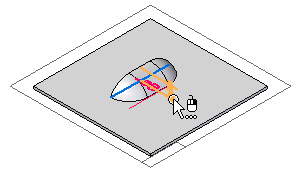
-
Type a new value and click Enter.
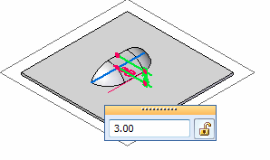
-
Click to save the change.
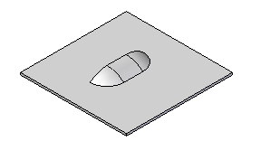
Move a louver
-
Select the louver.
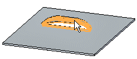
-
Click the steering wheel axis shown.
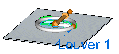
. -
Drag the louver to a new location.
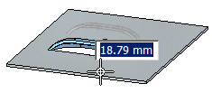
-
Click to save the edit.
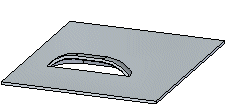
Edit louver parameters in the synchronous envirnonment
-
Click a louver to display the edit handle.
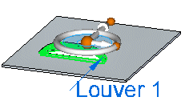
-
Click the edit handle.
The command bar and parameter edit box are displayed.
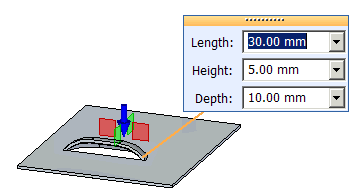
-
Type a new value for the parameters.
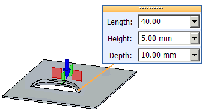
-
Click to save the edits.
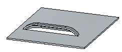